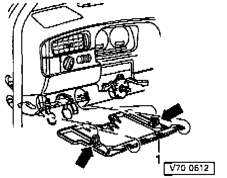
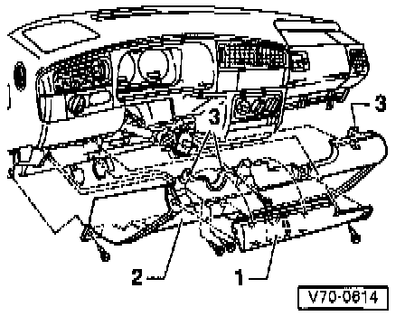
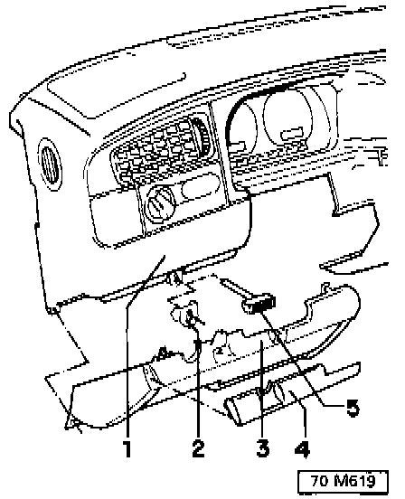
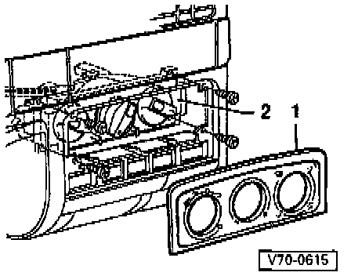
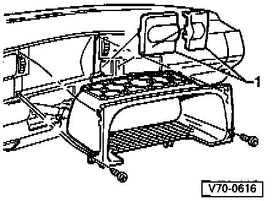
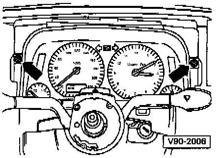
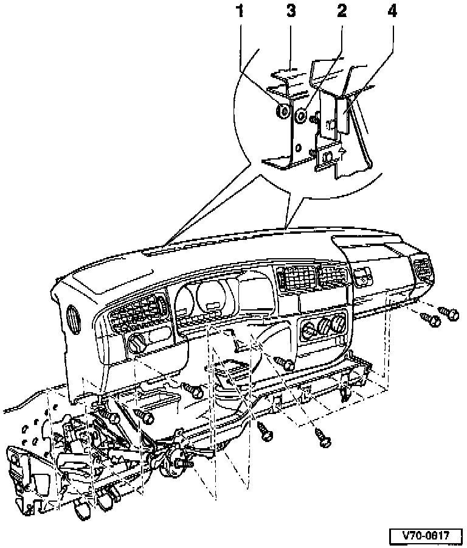

Dashboard / Instrument Panel: Service and Repair
Instrument Panel, Removing
- Disconnect battery Ground (GND) Strap.
- Remove center console. Service and Repair
- Remove radio. Service and Repair
Vehicles with airbag
- Remove driver's side airbag unit. Service and Repair
- Remove steering wheel. Service and Repair
- Remove passenger side airbag unit. Service and Repair
Vehicles without driver-airbag
- Remove steering wheel. Service and Repair

Removing relay panel cover
- Press locking buttons (arrows) to unlock and pull out cover -1-.

Removing and installing cover on driver's side
- Pry off cover -1-.
- Remove Phillips-head screws and pull tray -2- downward at an angle.
- Make sure that guides -3- disengage.
Vehicles with Diesel engine
(From 10.95, VIN # 3VWRJ01H4PM039231)

1 - Instrument panel
2 - Support for cold start cable
3 - Knee bar, left
4 - Cover
5 - Handle
Removing
- Pry off cover -4-.
- Remove Phillips-head screws and pull left knee bar downward at an angle.
- Pull out handle -5- and support -2-.

Removing and installing passenger side storage shelf (Vehicles without passenger-side airbag)
- Remove Phillips-head screws and pull shelf downward at an angle.
- Make sure tabs (Arrows) disengage.

Removing heater controls
- Pry off cover -1- and remove Phillips-head screws
- Press heating and ventilating control -2- with attached cables under instrument panel.

Removing instrument cluster cover
- Unclip covers -1- and light switch.
- Remove Phillips-head screws and pull out instrument cluster cover.
- Remove instrument cluster.

- Remove mounting screws (arrows).
- Tip instrument cluster forward.
- Disconnect multi-pin connector on rear of instrument cluster.
- Remove instrument cluster.

- Remove hex-head screws (11 including glove box).
- Remove hex nuts -1- (located in the plenum chamber).
- Partially remove instrument panel -4- from carrier/bulkhead -3-, and disconnect wiring harnesses from the instrument panel.
- Remove instrument panel.
Installation
- Installation is in the reverse order of removal. Make sure that sealing washers -2- are in place when installing the instrument panel.